Adrina Esfandiari
stars, mountains, and the things I’ve made
W A S D to walk · drag to look
Loading…
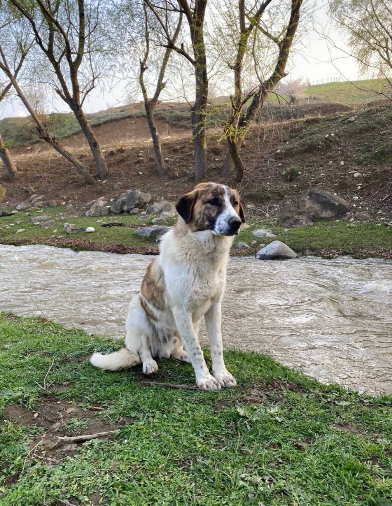
River
stars, mountains, and the things I’ve made
W A S D to walk · drag to look
Loading…
about me · who I am
I’m a Computer Science student at York University specializing in Machine Learning.
My path began in pure mathematics at the University of Waterloo. For financial reasons I transferred to York University, where I’m now studying Computer Science. Right now I’m digging into neural networks and computer vision in machine learning, and in January 2027 I’m planning to start learning reinforcement learning. I like turning mathematical thinking into useful software, from predicting 3D print times to building interactive simulation systems.
I’m also an undergraduate research assistant at York, working with Professor Meiying Qin on a university life-simulation game.
And beyond the code? I love stars and mountains. This world is a reflection of that.
2025 – 2029
Honours BSc, Computer Science · Machine Learning specialization
Provost’s Award · 2025–2026 Dean’s Honour Roll
2024 – 2025
Honours Mathematics, Pure Mathematics studies
President’s Scholarship · Fall 2024 term distinction
my projects · things I’ve built
no. 1 · machine learning × 3D
An STL orientation tool that analyzes geometry and compares print poses, with an interactive 3D viewer, overhang analysis, and optimized STL export.
70% lower prediction error on held-out slicer-generated print-time estimates compared with geometry formulas.
A prediction benchmark; physical print performance has not been established.
no. 2 · accessibility × AI
An accessibility-focused hackathon prototype to help seniors manage medications, using Gemini to turn complex medical terminology into simpler explanations.
✧ Best Use of MongoDB Atlas
no. 3 · mathematical computing
What if a puzzle became a system of equations? In a four-student Waterloo Scholar Program team, I helped build a SageMath solver for 4 × 4 Sudoku using Gröbner bases and Buchberger’s algorithm.
University of Waterloo · January–April 2025
my experience · research & internships
Computer Science · Machine Learning · Mathematical Computing
Nov 2026 — present
York University · Professor Meiying Qin
Developing gameplay systems in Unity and C#, including player interactions, academic activities, and student attributes. Learning and applying a ScriptableObject-based architecture within a research team.
Sep — Dec 2025
Canadian Association of Movers
Worked with a team of five to research UX and SEO improvements, benchmark more than ten SEO metrics, and develop recommendations for an employer partner.
Jan — Apr 2025
University of Waterloo Scholar Program
Selected among 36 undergraduate students. Collaborated on an algebraic Sudoku solver and presented our work to an audience of more than 50 students and researchers.
contact me · say hello
Adrina Esfandiari
Toronto, Canada
my hobbies · outside of classes
Outside of classes and projects, I like being out in the world—with my friends, on a trail, or somewhere I haven’t walked before.
I love hiking and finding different places to walk. Mountains and a sky full of stars are two of my favourite things.
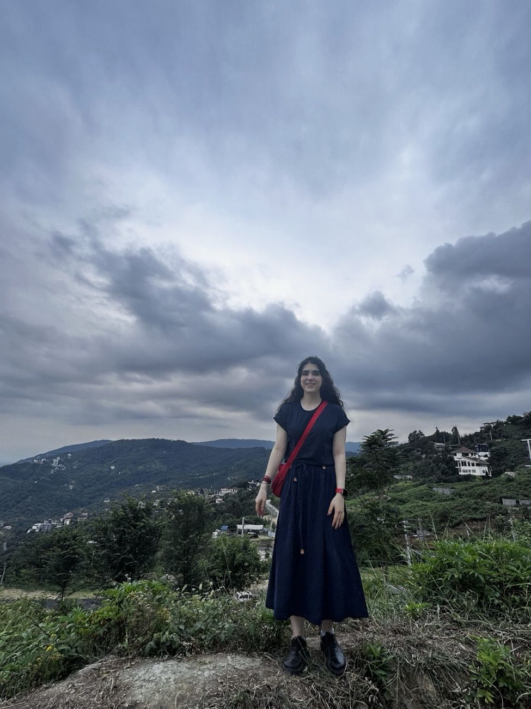
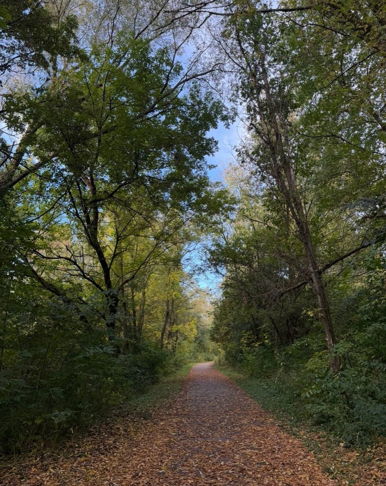
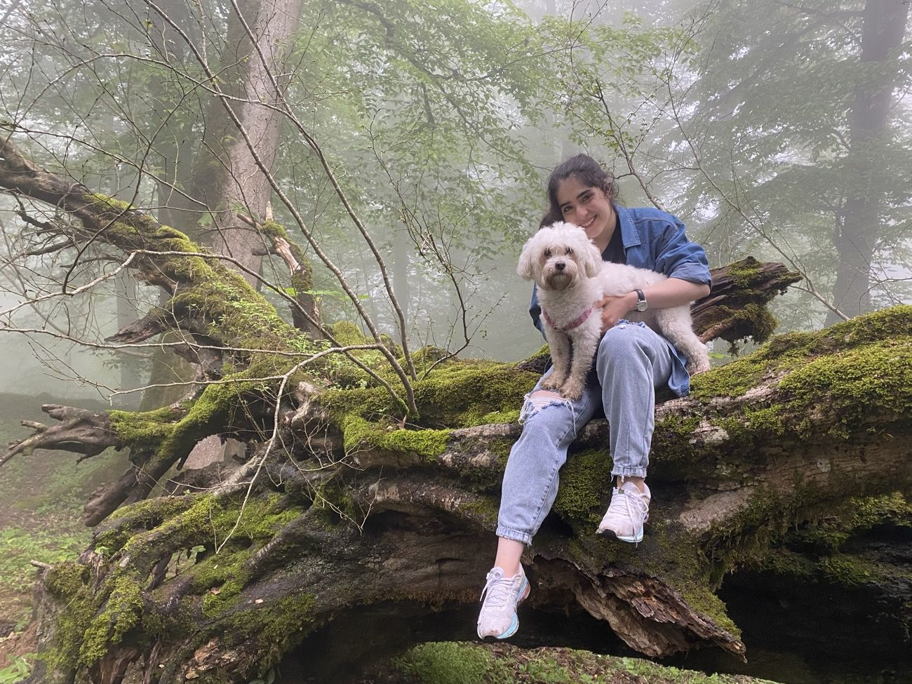
I love spending time with my friends, and I love meeting new people. The people I’m with are a big part of the memories I make.
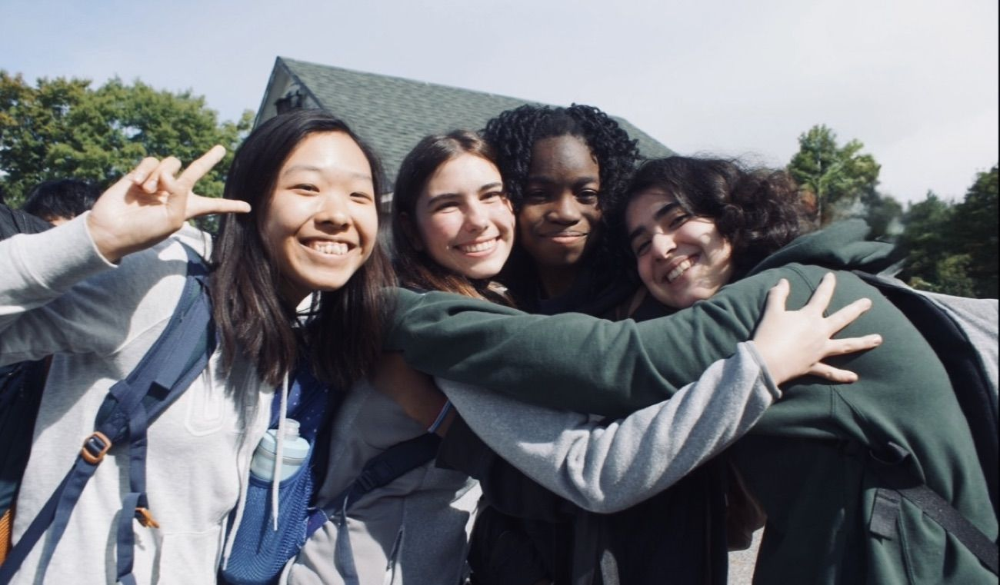
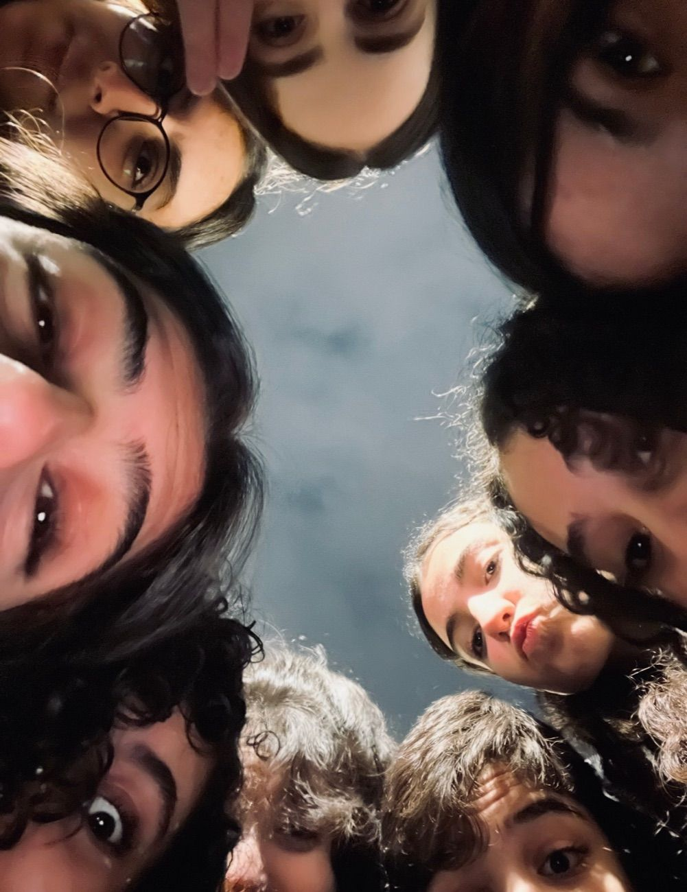
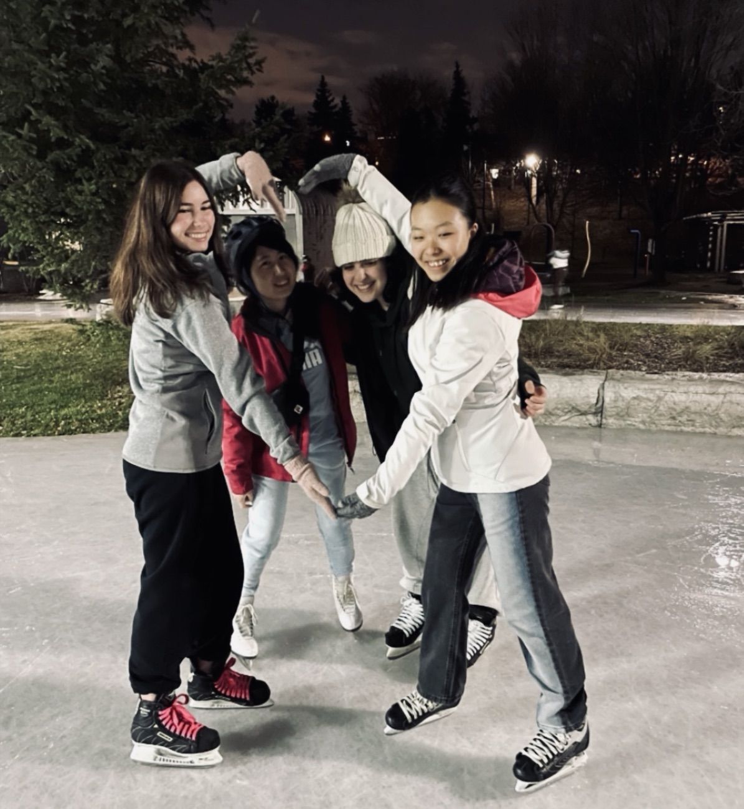
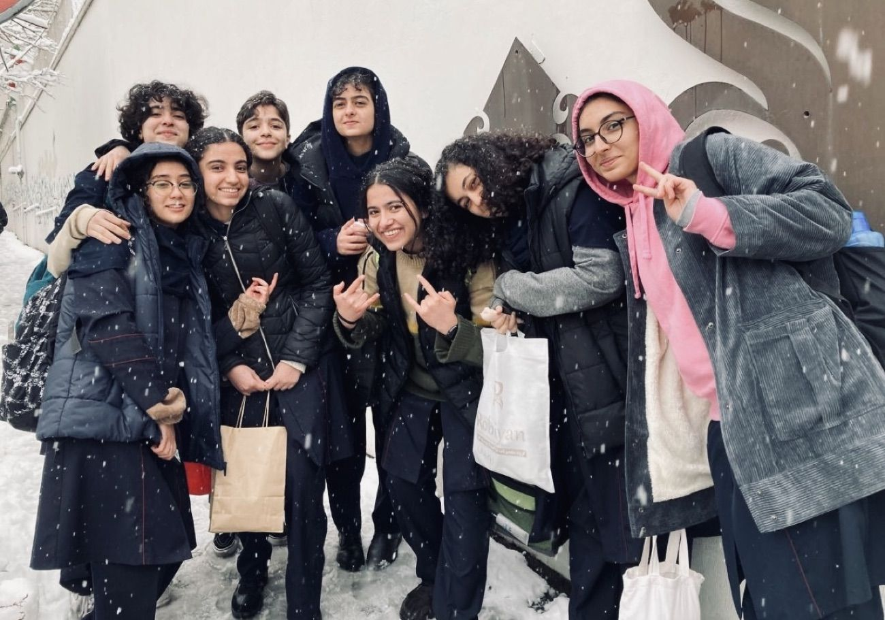
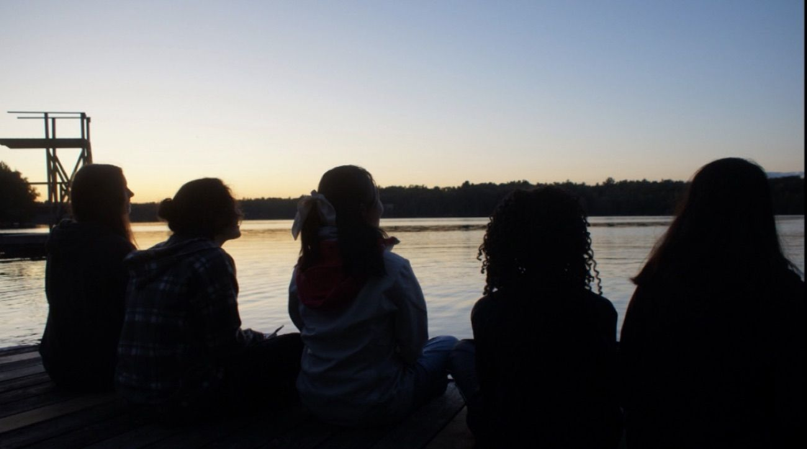
Hackathons are even better with my friends. We build things, make memories, and laugh a lot along the way.
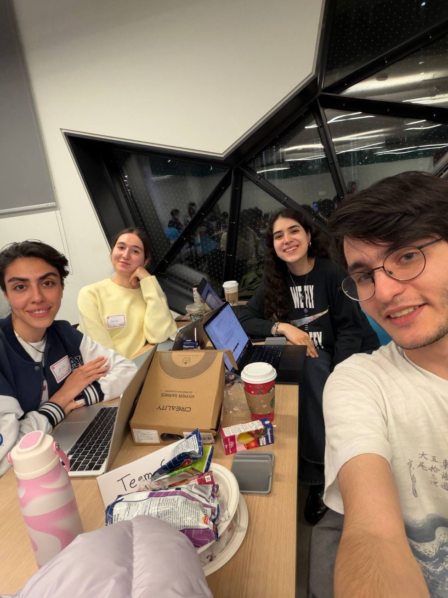
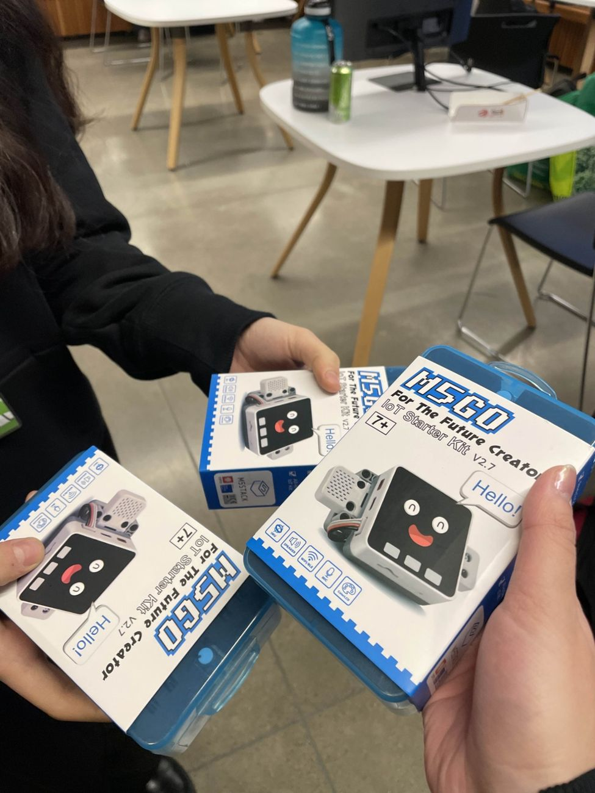
I love both dogs and cats, though I’m probably more of a dog person.
This is Kylie, my dog. She was about a month old when we got her, and she’s around nine now.
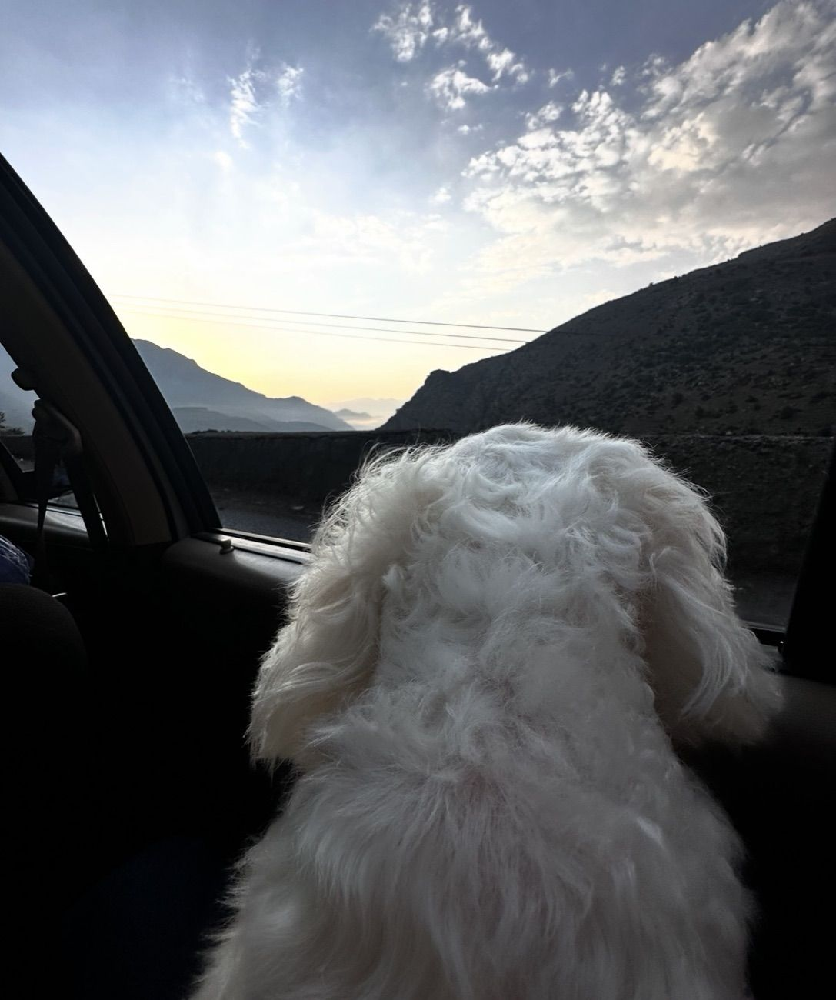
I’m also interested in robotics. There’s a lot more to me than one subject or project, and I like having room to explore.
river · why there’s a dog here
One day I was walking next to a river, and I met this dog.
There was no one around him. He was just walking by the water, doing the things he enjoyed, out in nature. He was so free, and I loved that.
I always try to remind myself to be a free person, and to do the things that make me happy.
So I put a little dog in this world to remind me. I call him River, after the place I met him. He goes wherever he wants.